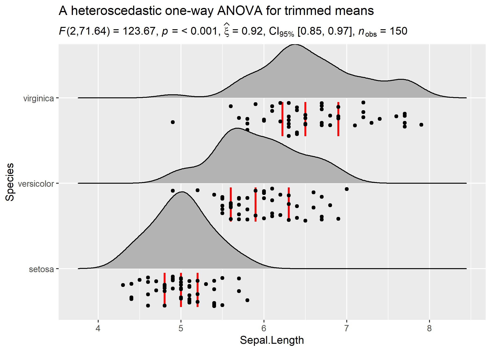

Introduction
statsExpressions provides statistical processing backend for the ggstatsplot package, which combines ggplot2 visualizations with expressions containing results from statistical tests. statsExpressions contains all functions needed to create these expressions.
Installation
To get the latest, stable CRAN release:
You can get the development version of the package from GitHub. To see what new changes (and bug fixes) have been made to the package since the last release on CRAN, you can check the detailed log of changes here: https://indrajeetpatil.github.io/statsExpressions/news/index.html
If you are in hurry and want to reduce the time of installation, prefer-
# needed package to download from GitHub repo
utils::install.packages(pkgs = "remotes")
# downloading the package from GitHub
remotes::install_github(
repo = "IndrajeetPatil/statsExpressions", # package path on GitHub
dependencies = FALSE, # assumes you have already installed needed packages
quick = TRUE # skips docs, demos, and vignettes
)
If time is not a constraint-
remotes::install_github(
repo = "IndrajeetPatil/statsExpressions", # package path on GitHub
dependencies = TRUE, # installs packages which statsExpressions depends on
upgrade_dependencies = TRUE # updates any out of date dependencies
)
Citation
If you want to cite this package in a scientific journal or in any other context, run the following code in your R console:
Summary of types of statistical analyses
Currently, it supports only the most common types of statistical tests. Specifically, parametric, non-parametric, robust, and bayesian versions of:
- t-test
- anova
-
correlation tests
-
contingency table analysis
- meta-analysis
The table below summarizes all the different types of analyses currently supported in this package-
| Between group/condition comparisons |
Yes |
Yes |
Yes |
Yes |
| Within group/condition comparisons |
Yes |
Yes |
Yes |
Yes |
| Distribution of a numeric variable |
Yes |
Yes |
Yes |
Yes |
| Correlation between two variables |
Yes |
Yes |
Yes |
Yes |
| Association between categorical variables |
Yes |
NA |
NA |
Yes |
| Equal proportions for categorical variable levels |
Yes |
NA |
NA |
Yes |
| Random-effects meta-analysis |
Yes |
No |
Yes |
Yes |
Statistical reporting
For all statistical test expressions, the default template abides by the APA gold standard for statistical reporting. For example, here are results from Yuen’s test for trimmed means (robust t-test):

Summary of statistical tests and effect sizes
Here is a summary table of all the statistical tests currently supported across various functions:
Primary functions
A list of primary functions in this package can be found at the package website: https://indrajeetpatil.github.io/statsExpressions/reference/index.html
Following are few examples of how these functions can be used.
Example: Expressions for one-sample t-test
# setup
set.seed(123)
library(ggplot2)
library(statsExpressions)
# create fake data
df Note: 95% CI for effect size estimate was computed with 100 bootstrap samples.

Example: Expressions for two-sample t-test
# setup
set.seed(123)
library(ggplot2)
library(hrbrthemes)
# create a plot
p

Example: Expressions for one-way ANOVA
Let’s say we want to check differences in weight of the vehicle based on number of cylinders in the engine and wish to carry out Welch’s ANOVA:
# setup
set.seed(123)
library(ggplot2)
library(statsExpressions)
# create a boxplot
ggplot(iris, aes(x = Species, y = Sepal.Length)) +
geom_boxplot() +
labs(
title = "Welch's ANOVA",
subtitle = expr_anova_parametric(iris, Species, Sepal.Length, messages = FALSE)
)
In case you change your mind and now want to carry out a robust ANOVA instead. Also, let’s use a different kind of a visualization:
# setup
set.seed(123)
library(ggplot2)
library(statsExpressions)
library(ggridges)
# create a ridgeplot
p

Example: Expressions for correlation analysis
Let’s look at another example where we want to run correlation analysis:
# setup
set.seed(123)
library(ggplot2)
library(statsExpressions)
# create a ridgeplot
p
Example: Expressions for contingency table analysis
# setup
set.seed(123)
library(ggplot2)
library(statsExpressions)
# data
df Note: 95% CI for effect size estimate was computed with 100 bootstrap samples.

You can also use these function to get the expression in return without having to display them in plots:
# setup
set.seed(123)
library(ggplot2)
library(statsExpressions)
# Pearson's chi-squared test of independence
expr_contingency_tab(mtcars, am, cyl, messages = FALSE)
#> paste(NULL, chi["Pearson"]^2, "(", "2", ") = ", "8.74", ", ",
#> italic("p"), " = ", "0.013", ", ", widehat(italic("V"))["Cramer"],
#> " = ", "0.46", ", CI"["95%"], " [", "0.08", ", ", "0.75",
#> "]", ", ", italic("n")["obs"], " = ", 32L)
Usage in ggstatsplot
Note that these functions were initially written to display results from statistical tests on ready-made ggplot2 plots implemented in ggstatsplot.
For detailed documentation, see the package website: https://indrajeetpatil.github.io/ggstatsplot/
Here is an example from ggstatsplot of what the plots look like when the expressions are displayed in the subtitle-

Contributing
I’m happy to receive bug reports, suggestions, questions, and (most of all) contributions to fix problems and add features. I personally prefer using the GitHub issues system over trying to reach out to me in other ways (personal e-mail, Twitter, etc.). Pull Requests for contributions are encouraged.
Here are some simple ways in which you can contribute (in the increasing order of commitment):
Read and correct any inconsistencies in the documentation
Raise issues about bugs or wanted features
Review code
Add new functionality (in the form of new plotting functions or helpers for preparing subtitles)
Please note that this project is released with a Contributor Code of Conduct. By participating in this project you agree to abide by its terms.